Equipment silhouette drafts
Planning board · not approved TD art or runtime UI. Shared silhouettes require material and silhouette refinement before final generation.
Open 40 generated PNG equipment icons
Rare 40 / Epic 40 / Legendary 40 / Unique 40 비교 보드
160종 등급·영웅 클래스 제한·아이템 이름 통합 목록
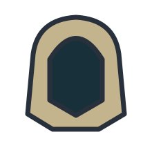
Wayfarer Hood
Shared · head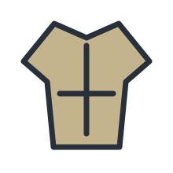
Wayfarer Coat
Shared · bodyWayfarer Gloves
Shared · handsWayfarer Boots
Shared · feetVigor Ring
Shared · accessory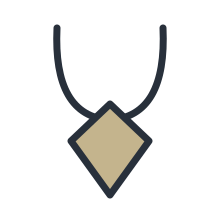
Ward Pendant
Shared · accessoryValor Ring
Shared · accessoryRefuge Charm
Shared · accessory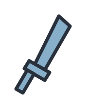
Oathguard Sword
knight · weapon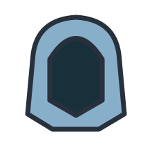
Oathguard Headguard
knight · headOathguard Vestments
knight · bodyOathguard Grips
knight · handsOathguard Treads
knight · feetOathguard Signet
knight · accessoryOathguard Pendant
knight · accessoryBriarwatch Bow
elf · weaponBriarwatch Headguard
elf · headBriarwatch Vestments
elf · bodyBriarwatch Grips
elf · handsBriarwatch Treads
elf · feetBriarwatch Signet
elf · accessoryBriarwatch Pendant
elf · accessory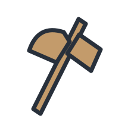
Stonehearth Axe
dwarf · weapon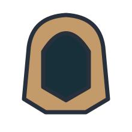
Stonehearth Headguard
dwarf · head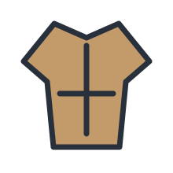
Stonehearth Vestments
dwarf · bodyStonehearth Grips
dwarf · handsStonehearth Treads
dwarf · feetStonehearth Signet
dwarf · accessoryStonehearth Pendant
dwarf · accessory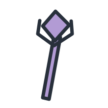
Aetherweave Staff
mage · weapon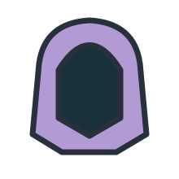
Aetherweave Headguard
mage · headAetherweave Vestments
mage · body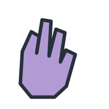
Aetherweave Grips
mage · handsAetherweave Treads
mage · feetAetherweave Signet
mage · accessory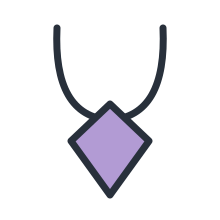
Aetherweave Pendant
mage · accessoryOathguard Shield
knight · offhandMana Ring
Shared · accessoryArcane Reservoir Pendant
Shared · accessoryWellspring Charm
Shared · accessory